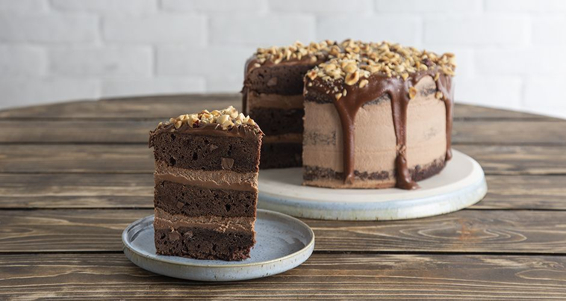

Επιδόρπια
Επιλέξτε κατηγορία γλυκού

Κέικ
Κέικ με Βερίκοκα
-Προθερμαίνουμε τον φούρνο στους 180ο C στον αέρα.
-Βουτυρώνουμε και αλευρώνουμε μια στρογγυλή φόρμα 20 εκ.
-Χτυπάμε στον κάδο του μίξερ με το σύρμα στη δυνατή ταχύτητα το βούτυρο με τη ζάχαρη για 5 λεπτά μέχρι να αφρατέψει το βούτυρο.
-Χαμηλώνουμε την ταχύτητα και ρίχνουμε το εκχύλισμα βανίλιας και τα αυγά ένα ένα, περιμένοντας να απορροφηθεί το πρώτο πριν ρίξουμε το επόμενο.
-Ανακατεύουμε σε ένα μπολ το αλεύρι, το μπέικιν πάουντερ και το αλάτι.
-Ρίχνουμε σε δόσεις εναλλάξ το μείγμα των στερεών και το ξινόγαλο, ξεκινώντας και τελειώνοντας με το μείγμα των στερεών.
-Χτυπάμε για λίγα δευτερόλεπτα ακόμα μέχρι να έχουμε ένα ομοιόμορφο μείγμα. Αφαιρούμε τον κάδο από το μίξερ.
-Ρίχνουμε το μισό μείγμα στη φόρμα.
-Απλώνουμε από πάνω τις φέτες από τα βερίκοκα και καλύπτουμε με το υπόλοιπο μείγμα.
-Ισιώνουμε με μια σπάτουλα την επιφάνεια του μείγματος και ψήνουμε για 35-40 λεπτά μέχρι να σφίξει το μείγμα και να χρυσαφίσει.
-Αφαιρούμε τη φόρμα από τον φούρνο και αφήνουμε πάνω σε μια σχάρα μέχρι να κρυώσει εντελώς το κέικ.
-Ξεφορμάρουμε, πασπαλίζουμε με ζάχαρη άχνη, και σερβίρουμε.

Κέικ βανίλιας γεμιστό με πραλίνα φουντουκιού
-Προθερμαίνουμε τον φούρνο στους 180ο C στον αέρα.
-Στον κάδο του μίξερ βάζουμε το βούτυρο, τη ζάχαρη και χτυπάμε με σύρμα, σε δυνατή ταχύτητα για 3-4 λεπτά μέχρι να αφρατέψει το μείγμα.
-Χαμηλώνουμε την ταχύτητα και προσθέτουμε ένα ένα τα αυγά. Περιμένουμε αν απορροφηθεί το ένα για να προσθέσουμε το επόμενο.
-Προσθέτουμε τη βανίλια, το ξύσμα από το πορτοκάλι και το αλάτι.
-Στη συνέχεια προσθέτουμε εναλλάξ, σε δόσεις, το αλεύρι και το γάλα. Ανά διαστήματα σταματάμε το μίξερ και με μια μαρίζ παίρνουμε το μείγμα από τα τοιχώματα.
-Βάζουμε το μείγμα σε μια βουτυρωμένη και αλευρωμένη φόρμα με τρύπα 28 εκ. και ψήνουμε για 1 ώρα. Ξεφορμάρουμε και αφήνουμε στην άκρη να κρυώσει καλά.
-Κόβουμε κατά μήκος την πάνω πλευρά του κέικ. Χαράσσουμε με ένα μαχαίρι την ψίχα και με ένα κουτάλι αφαιρούμε όλο το εσωτερικό μέρος του κέικ με προσοχή να μην τρυπήσουμε το κέικ περιμετρικά. Την ψίχα δεν την πετάμε, την κάνουμε cake pops!
-Γεμίζουμε με την πραλίνα φουντουκιού και καλύπτουμε με το καπάκι του κέικ.
-Πασπαλίζουμε με ζάχαρη άχνη και σερβίρουμε.
Κέικ σοκολάτας με μαρέγκα
-Προθερμαίνουμε τον φούρνο στους 160ο C στον αέρα.
-Σε ένα μπολ βάζουμε το βούτυρο, την κουβερτούρα σπασμένη σε κομμάτια και καλύπτουμε με μεμβράνη.
-Βάζουμε στον φούρνο μικροκυμάτων στα 800 Watt για 1- 1 ½ λεπτό.
-Αφαιρούμε και ανακατεύουμε μέχρι να έχουμε ένα ομοιογενές μείγμα.
-Στον κάδο του μίξερ βάζουμε τα αυγά, τους κρόκους, τη ζάχαρη, τη βανίλια και χτυπάμε με το σύρμα για 3-4 λεπτά σε δυνατή ταχύτητα μέχρι να αφρατέψουν τα υλικά.
-Προσθέτουμε το μείγμα της σοκολάτας και ανακατεύουμε για 1 λεπτό μέχρι να έχουμε ένα ομοιογενές μείγμα. Αφαιρούμε και αφήνουμε στην άκρη.
-Σε ένα μπολ βάζουμε τα τριμμένα φουντούκια, το αλεύρι, το μπέικιν, αλάτι και ανακατεύουμε με ένα κουτάλι. Βάζουμε στον κάδο με τα υπόλοιπα υλικά και ανακατεύουμε απαλά με μια μαρίζ.
-Μεταφέρουμε το μείγμα σε μια βουτυρωμένη και κακαωμένη φόρμα με αποσπώμενη βάση 25 εκ. και ψήνουμε για 35 λεπτά.
-Αφαιρούμε και αφήνουμε να κρυώσει καλά.
Τούρτες
Τούρτα σοκολάτας με φράουλες
-Τοποθετούμε ένα κατσαρολάκι σε μέτρια φωτια.
-Βάζουμε την κρέμα γάλακτος και αφήνουμε να πάρει μια βράση.
-Σε ένα μπολ σπάμε την κουβερτούρα σε κομμάτια.
-Μεταφέρουμε την καυτή κρέμα γάλακτος στο μπολ με την κουβερτούρα και αφήνουμε για 30-40 δευτερόλεπτα. Στη συνέχεια, ανακατεύουμε με ένα κουτάλι και την αφήνουμε 1 ώρα σε θερμοκρασία δωματίου να κρυώσει.
-Προθερμαίνουμε τον φούρνο στους 180ο C στον αέρα.
-Σε ένα μπολ βάζουμε το κακάο, το νερό και ανακατεύουμε καλά να λιώσει. Αφήνουμε στην άκρη να κρυώσει.
-Στον κάδο του μίξερ βάζουμε το βούτυρο, τη ζάχαρη, τη βανίλια και χτυπάμε σε μέτρια ταχύτητα με το σύρμα για 3-4 λεπτά να αφρατέψει το μείγμα.
-Βάζουμε ένα ένα τα αυγά. Περιμένουμε να απορροφηθεί το ένα να βάλουμε το επόμενο.
-Βάζουμε το μείγμα με το κακάο, το ξινόγαλο και συνεχίζουμε να χτυπάμε.
-Σε αν μπολ βάζουμε το αλεύρι, τη σόδα, το αλάτι και ανακατεύουμε. Βάζουμε 3 κ.σ. από το μείγμα στον κάδο και χτυπάμε για 1 λεπτό.
-Αφαιρούμε τον κάδο, βάζουμε τα υπόλοιπα στερεά υλικά και ανακατεύουμε με ένα σύρμα χειρός.
-Μοιράζουμε το μείγμα σε τρεις βουτυρωμένες και κακαωμένες φόρμες 20 εκ. που στην βάση τους έχουμε απλώσει λαδόκολλα.
-Ψήνουμε για 45-50 λεπτά. Αφήνουμε να κρυώσουν καλά.
-Κόβουμε τις φράουλες στη μέση και αφήνουμε στην άκρη.
-Βάζουμε την κρύα γκανάς στο μίξερ και χτυπάμε για 30 δευτερόλεπτα να αφρατέψει. Μπορούμε να βάλουμε το μπολ με τη γκανάς που έμεινε στον φούρνο μικροκυμάτων για να λιώσει.
-Στην πιατέλα σερβιρίσματος βάζουμε το ένα παντεσπάνι. Απλώνουμε το 1/3 από τη γκανάς και το 1/3 από τις φράουλες.
-Καλύπτουμε με το δεύτερο παντεσπάνι, το 1/3 από τη γκανάς και το 1/3 από τις φράουλες.
-Ακολουθούμε την ίδια διαδικασία για το τρίτο παντεσπάνι, την υπόλοιπη γκανάς και τις φράουλες.
-Απλώνουμε με την λιωμένη γκανάς και σερβίρουμε.

Τούρτα brownies με frosting πραλίνα
-Προθερμαίνουμε τον φούρνο στους 180ο C στον αέρα.
-Λιώνουμε σε μπεν μαρί το βούτυρο με τη σοκολάτα, τα αφαιρούμε από τη φωτιά και τα αφήνουμε στην άκρη, σε θερμοκρασία δωματίου.
-Σε ένα μεγάλο μπολ ανακατεύουμε με ένα σύρμα τη ζάχαρη, τα αυγά, το εκχύλισμα βανίλιας, την κανέλα και το αλάτι, μέχρι να διαλυθεί η ζάχαρη.
-Σε δεύτερο μπολ βάζουμε το αλεύρι, το κακάο, τη σοκολάτα σε κομμάτια, και ανακατεύουμε μέχρι να καλύψει το αλεύρι τη σοκολάτα.
-Ανακατεύουμε με μία μαρίζ, το δεύτερο μείγμα με τα αυγά μαζί με το πρώτο μείγμα με το λιωμένο βούτυρο και τη σοκολάτα, και προσθέτουμε το τρίτο μείγμα με τα στερεά υλικά.
-Βουτυρώνουμε και αλευρώνουμε 3 ταψάκια των 20 εκ., χωρίζουμε το μείγμα σε αυτά τα ταψάκια, και ψήνουμε για 20-25 λεπτά.
-Αφήνουμε τα brownies να κρυώσουν πάνω σε μία σχάρα.
-Σε ένα μεγάλο μπολ βάζουμε το βούτυρο, τη ζάχαρη άχνη, την πραλίνα σοκολάτας, το εκχύλισμα βανίλιας, το γάλα, και χτυπάμε καλά με το σύρμα του μίξερ μέχρι να αφρατέψουν.
-Βάζουμε το πρώτο brownie σε μία πιατέλα και απλώνουμε με μια σπάτουλα το ⅓ από το frosting πραλίνα.
-Καλύπτουμε με το δεύτερο brownie και συνεχίζουμε την ίδια διαδικασία και με το τρίτο απλώνοντας το frosting πάνω από κάθε brownie, έτσι ώστε να καλύψουμε με την τελευταία δόση και τα τοιχώματα της τούρτας.
-Βάζουμε την τούρτα στο ψυγείο για 4-6 ώρες μέχρι να παγώσει.
-Αφαιρούμε από το ψυγείο, και περιχύνουμε με τη πραλίνα ξεκινώντας από το κέντρο και συνεχίζοντας περιμετρικά, έτσι ώστε να τρέξει στα πλαϊνά.
-Πασπαλίζουμε με τα καβουρδισμένα φουντούκια και σερβίρουμε.
Παγωτά
Παγωτό ταχίνι
-Ρίχνουμε όλα τα υλικά σε ένα μπολ και ανακατεύουμε πολύ καλά με ένα σύρμα χειρός, για 2-3 λεπτά.
-Αδειάζουμε το μείγμα στον κάδο της παγωτομηχανής και το χτυπάμε σε δόσεις, μέχρι να αποκτήσει την απαλή και λεία υφή του παγωτού. Ο χρόνος χτυπήματος εξαρτάται από την παγωτομηχανή του καθενός.
-Mεταφέρουμε το μείγμα σε μια μακρόστενη φόρμα για κέικ 35x10 εκ., το καλύπτουμε με μεμβράνη, και το αποθηκεύουμε στην κατάψυξη για τουλάχιστον 6-8 ώρες, μέχρι να σφίξει αρκετά.
-Αν δεν έχουμε παγωτομηχανή, ανά 2 ώρες βγάζουμε το μείγμα από την κατάψυξη, το ξαναχτυπάμε με το μίξερ χειρός και το τοποθετούμε πάλι στην κατάψυξη (αν θέλουμε, μπορούμε αντί για το μίξερ να ανακατεύουμε το παγωτό με ένα κουτάλι, αλλά δεν θα γίνει τόσο αφράτο). Αυτό θα χρειαστεί να το κάνουμε έως ότου παγώσει καλά κι αποκτήσει τη σύσταση που επιθυμούμε (ο χρόνος διαφέρει ανάλογα με την ένταση της κατάψυξης).
-Σερβίρουμε σε χωνάκια και πασπαλίζουμε με παστέλι ψιλοκομμένο.
Σορμπέ καρπούζι
-Φτιάχνουμε ένα σιρόπι βάζοντας σε ένα κατσαρολάκι το νερό, τη ζάχαρη και το λεμόνι.
-Περιμένουμε να πάρει βράση και ανακατεύουμε να λιώσει η ζάχαρη.
-Το αφήνουμε στην άκρη να κρυώσει.
-Κόβουμε το καρπούζι σε μικρά κομμάτια.
-Χτυπάμε σε ένα μπλέντερ το σιρόπι και το καρπούζι μέχρι να έχουμε ένα λείο και κρεμώδες μείγμα.
-Το μεταφέρουμε σε ένα σκεύος και βάζουμε στην κατάψυξη για 2-3 ώρες.
-Για να σερβίρουμε χρειάζεται να μείνει το σορμπέ για 5 λεπτά σε θερμοκρασία δωματίου.
-Σερβίρουμε με καρπούζι κομμένο σε κυβάκια.

Gelato φιστίκι
-Βάζουμε τα φιστίκια Αιγίνης μαζί με τη ζάχαρη στο μηχάνημα με τα μαχαίρια και χτυπάμε σε δυνατή ταχύτητα για 2-3 λεπτά μέχρι να διαλυθούν τα φιστίκια και να δημιουργηθεί μια πάστα. Προσθέτουμε 70 γρ. από το γάλα και χτυπάμε μέχρι να ομογενοποιηθεί το μείγμα.
-Βάζουμε όλα τα υλικά μαζί με το μείγμα φιστικιού σε μια κατσαρόλα και μαγειρεύουμε σε μέτρια προς δυνατή φωτιά ανακατεύοντας με μια ξύλινη κουτάλα μέχρι το μείγμα να φτάσει τους 85ο C.
-Αφαιρούμε την κατσαρόλα από τη φωτιά.
-Περνάμε το μείγμα από σίτα, μεταφέρουμε σε ένα μπολ, και χτυπάμε με ένα ραβδομπλέντερ σε δυνατή ταχύτητα μέχρι να ομογενοποιηθεί, για 2-3 λεπτά.
-Τοποθετούμε το μείγμα στο ψυγείο για 1 ώρα σκεπασμένο με μεμβράνη.
-Αφαιρούμε το μείγμα από το ψυγείο, το μεταφέρουμε στον κάδο της παγωτομηχανής και χτυπάμε σε χαμηλή ταχύτητα για 1 ώρα ή μέχρι να πήξει το μείγμα.
-Σερβίρουμε με ψιλοκομμένα φιστίκια Αιγίνης και φύλλα βασιλικού.
-Τοποθετούμε σε ένα μπολ και αποθηκεύουμε στην κατάψυξη.
Χριστουγενιάτικα Γλυκά
Παραδοσιακοί κουραμπιέδες
-Προθερμαίνουμε τον φούρνο στους 180ο C στον αέρα.
-Στον κάδο του μίξερ βάζουμε το βούτυρο, την άχνη ζάχαρη και χτυπάμε σε δυνατή ταχύτητα με το φτερό για 10-15 λεπτά να αφρατέψει και να ασπρίσει το μείγμα.
-Προσθέτουμε τη βανίλια σε σκόνη, το ανθόνερο, το λικέρ πικραμύγδαλο και συνεχίζουμε να χτυπάμε. Αφαιρούμε τον κάδο από το μίξερ.
-Σπάμε το αμύγδαλο με τα χέρια μας για να το κάνουμε τρίμμα και το βάζουμε σε ένα μπολ. Προσθέτουμε το αλεύρι, το αλάτι και το βάζουμε στον κάδο του μίξερ.
-Ανακατεύουμε το μείγμα με μια κουτάλα, πολύ απαλά για να μην πέσει ο όγκος του μείγματος. Μόλις ομογενοποιηθούν τα υλικά ανακατεύουμε με τα χέρια μας.
-Πλάθουμε μπαλάκια 30 γρ. το κάθε ένα και μεταφέρουμε σε ταψί με λαδόκολλα. Πιέζουμε ελαφρά στο κέντρο με το δάχτυλό μας και ψήνουμε για 20-25 λεπτά. Ακολουθούμε την ίδια διαδικασία για όλο το μείγμα.
-Βάζουμε μια στρώση από τους κουραμπιέδες στην πιατέλα σερβιρίσματος, ψεκάζουμε με ανθόνερο και πασπαλίζουμε με άχνη ζάχαρη. Ακολουθούμε την ίδια διαδικασία για όλους τους κουραμπιέδες και σερβίρουμε.
Μελομακάρονα
-Βάζουμε τα υλικά για το σιρόπι, εκτός απο το μέλι, να βράσουν.
-Σημειώστε ότι πρέπει να ξεκινήσουμε το σιρόπι 3-4 ώρες πριν αρχίσουμε να φτιάχνουμε τα μελομακάρονα για να προλάβει να έχει κρυώσει όταν βγουν τα μελομακάρονά μας από τον φούρνο.
-Μόλις το σιρόπι πάρει μία βράση αποσύρουμε από τη φωτιά και προσθέτουμε το μέλι. Ανακατεύουμε και αφήνουμε το σιρόπι να κρυώσει.
-Προθερμαίνουμε τον φούρνο στους 190ο C στον αέρα.
-Βάζουμε στη συνέχεια όλα τα υλικά του μείγματος 1 σε ένα μεγάλο μπολ και τα ανακατεύουμε με ένα καλό σύρμα.
-Σε ένα δεύτερο μπολ ανακατεύουμε τα υλικά του μείγματος 2.
-Προσθέτουμε το μείγμα με τα υγρά συστατικά στο μείγμα με τα στερεά και ανακατεύουμε πολύ απαλά με τα χέρια, για πολύ λίγο (το πολύ για 10 δευτερόλεπτα) για να μην κόψει το μείγμα.
-Πλάθουμε τα μελομακάρονα σε ομοιόμορφο σχήμα (3-4 εκ. διάμετρο, 30 γρ. το κάθε ένα) και ψήνουμε για περίπου 20-25 λεπτά μέχρι να γίνουν τραγανά και να πάρουν ωραίο χρώμα.
-Μόλις είναι έτοιμα, ρίχνουμε τα καυτά μελομακάρονα στο κρύο σιρόπι και αφήνουμε για 10-15 δευτερόλεπτα. Στη συνέχεια τα σουρώνουμε και τα πασπαλίζουμε με μέλι και καρύδια.
Μακαρόν
-Βάζουμε στο μούλτι τα αμύγδαλα, τη ζάχαρη άχνη και χτυπάμε καλά μέχρι να γίνουν σκόνη.
-Περνάμε το μείγμα από μία σίτα. Αν έχουν μείνει μεγάλα κομμάτια τα περνάμε ξανά από το μπλέντερ και μετά από τη σίτα. Δεν θέλουμε μεγάλα κομμάτια στο μείγμα.
-Στον κάδο του μίξερ βάζουμε τα ασπράδια, το αλάτι και χτυπάμε σε δυνατή ταχύτητα. Προσθέτουμε τη ζάχαρη σε 5 δόσεις και χτυπάμε μέχρι να γίνει μαρέγκα.
-Με μία μαρίζ παίρνουμε τη μισή μαρέγκα και τη βάζουμε σε ένα μπολ.
-Βάζουμε στον κάδο με την υπόλοιπη μαρέγκα την σκόνη αμυγδάλου και χτυπάμε για λίγα δευτερόλεπτα μέχρι να ομογενοποιηθούν τα υλικά.
-Προσθέτουμε την υπόλοιπη μαρέγκα και ανακατεύουμε με μία μαρίζ μέχρι να αναμειχθούν τα υλικά. Ανακατεύουμε απαλά για να μην πέσει ο όγκος της μαρέγκας.
-Χωρίζουμε το μείγμα σε τρία μπολ.
-Στο ένα μπολ βάζουμε το κίτρινο χρώμα, στο άλλο μπολ βάλουμε το κόκκινο χρώμα και το τρίτο μπολ το αφήνουμε άσπρο. Ανακατεύουμε με ένα κουτάλι ώστε να πάρει χρώμα όλο το μείγμα.
-Μεταφέρουμε τα μείγματα σε τρείς διαφορετικές σακούλες ζαχαροπλαστικής.
-Στρώνουμε σε δύο ταψάκια από ένα φύλλο σιλικόνης (silpat) και σχηματίζουμε με τα κορνέ τα μακαρόν. Χτυπάμε λίγο τα ταψάκια για να ισιώσουν και τα αφήνουμε στην άκρη για 1 ώρα ώστε να κάνουν κρούστα.
-Προθερμαίνουμε τον φούρνο στους 130ο C στον αέρα.
-Ψήνουμε για 12-13 λεπτά. Αφαιρούμε και αφήνουμε για 30 λεπτά να κρυώσουν.
-Βάζουμε τις μαρμελάδες και τη γκανάς σε τρία κορνέ. Βάζουμε σε κάθε ένα κομμάτι από το μακαρόν από μία γεύση και καπακώνουμε με ένα άλλο κομμάτι ώστε να κάνουμε ένα σάντουιτς.
-Για τη γκανάς βάζουμε σε ένα μπολ 150 γρ. κρέμα γάλακτος, 150 γρ. κουβερτούρα και βάζουμε στον φούρνο μικροκυμάτων για 1 ½ λεπτό στα 800 Watt. Ανακατεύουμε με μία μαρίζ μέχρι να ομογενοποιηθούν τα υλικά.
-Συνεχίζουμε μέχρι να τελειώσουν τα μακαρόν και σερβίρουμε.